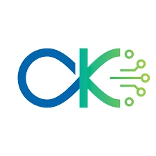
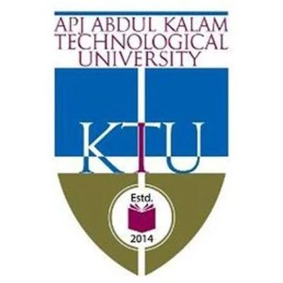

Akshay Sasi is an AI Engineer, researcher, and technologist from Kerala, India. He currently works at Storygame Pvt Ltd, Technopark, Trivandrum, where he specializes in LLM fine-tuning, RAG systems, agentic AI workflows, and open-source model inferencing. He holds an M.Tech in Computer Science & Engineering with AI specialization from Digital University Kerala, graduating Second Rank. Akshay is an active researcher on arXiv with published work in cognitive computing (ECG-based cognitive load classification) and higher-dimensional geometry (HyperShadow benchmark). He has built open-source AI products including Glass LM, an enterprise LLM privacy middleware, and Botfolio, a RAG-powered portfolio builder.
I build intelligent AI systems.
I build AI systems that think, learn, and adapt.
Storygame Pvt Ltd
Technopark, Trivandrum, Kerala
Quest Global
Technopark, Trivandrum, Kerala

AI Chip Center - Digital University Kerala
Trivandrum, Kerala
Sapience Edu Connect
Remote work
Digital University Kerala (formerly IIITMK)
Trivandrum, Kerala

APJ Abdul Kalam Technological University
Kannur, Kerala
Kendriya Vidyalaya Kannur
Kannur, Kerala
arXiv preprint · cs.LG, cs.CG · July 2026
A 190k-parameter PointNet achieves 96.6% accuracy distinguishing native 3D point clouds from projections of 4D–6D objects. Novel "rigidity witness" statistic reaches AUROC 0.982. Dataset: 10,800 point clouds + 1,800 rotating sequences.
arXiv preprint · 2026
Presented at the International Conference on Artificial Intelligence for Healthcare (AIHC 2025), National Institute of Technology Calicut, December 2025.
I build production-ready LLM pipelines — fine-tuned on your data, served at scale, grounded with RAG for live knowledge retrieval.
Agentic workflows, document parsing, real-time decision systems — I prototype fast and build to scale using n8n, LangChain, and custom agents.
From published arXiv work to edge AI hardware — I bring rigorous experimentation to applied problems, not just tutorials and boilerplate.
Generative design, brand systems, and creative content — I blend AI with design thinking to make brands unforgettable.

An agentic system that bridges the semantic gap in text-to-image synthesis by autonomously refining prompts using vision-language feedback to accurately reproduce a target visual concept.
A computer vision framework for detecting food contamination in agricultural products using texture analysis, image segmentation and morphological component analysis.
A multimodal cognitive load classifier using ECG (HRV, Catch22) and EEG achieving 92% accuracy for non-invasive mental state monitoring.
Just say hello!